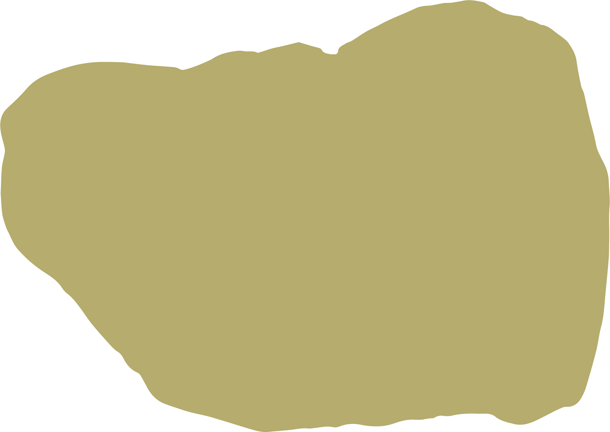

On September 7, 2023,
have a tooth crowned with gold.
On October 6, 2023,
have another tooth crowned with silver.
Discovered an unerupted wisdom tooth
in the upper jaw through X-ray.
9.9 hanam blood sausage soup conspiracy of emergency crews my older sister mentioning k-drama heroine